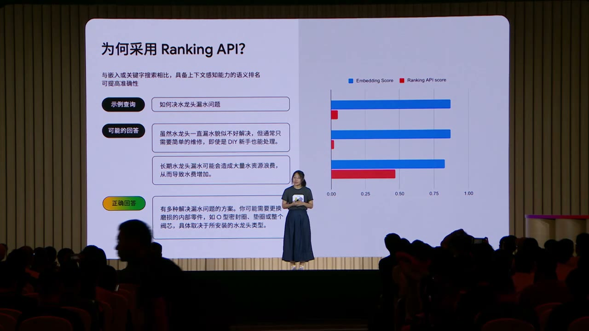

原视频 · 在线回看
点击后联网加载 B 站播放器；本地不下载整段视频。

原视频 · 在线回看
点击后联网加载 B 站播放器；本地不下载整段视频。
来源：Google中国｜超越 RAG：基于 Gemini 和向量搜索的生成式推荐 · 33 分 9 秒 · 深度阅读
假如我们问模型：“使用 Flutter 开发游戏，有没有专门的工具包？”模型只能利用训练时学到的内容，可能不知道后来出现的资源，于是回答没有发现相应工具。问题并没有超出语言理解能力，它缺的是当前这项信息。若我们先查到有关资料，再让模型阅读资料后回答，它就有机会给出与现实更接近的答案。
这就是 RAG，即 Retrieval-Augmented Generation，检索增强生成的基本思路。先从资料源找出相关内容，再把这些内容放进模型输入，最后让模型据此组织答案。资料进入这次输入，不等于重新训练模型；它让模型在当前问题上有东西可读。这里使用 Flutter Casual Games Toolkit 作为例子，说明外部资料怎样补上模型可能缺少的知识。
接下来我们沿着一次问答走下去。先看资料怎样变成可以检索的片段，再看相似片段为什么还需要筛选，最后检查答案是否得到资料支持。后面的客服和图文问答案例，会把这些步骤连成真正面向用户的一次交互。具体服务名称来自这场 Google Cloud 分享所使用的方案，理解各服务的职责，比记住当时的产品组合更重要。
资料可能来自网页、文本文件，也可能是 PDF。对于文字不能直接提取的页面，需要先用 OCR 识别其中的字。OCR 可以理解为让程序从图像中读出文字。提取之后，再把较长内容分成小片段，方便在提问时找到相关部分，而无需每次把所有文档交给模型。
接着，embedding 模型把每个片段转换成一组数字，即向量。向量保存的是便于比较的表示，原来的文字仍然需要留着。用户提问时，问题也被转换为向量，与已存片段比较，找回比较相关的若干项。常见的 Top N 表示按当前排序取前 N 项。真正交给回答模型阅读的，是这些候选对应的内容，而不只是检索得到的数字分数。
PDF 中还可能有表格、图表和图片。只提取连续文字，容易丢掉这些部分；只把每个字识别出来，也可能失去数值与行列标题的对应关系。因此，资料准备要关心“这些内容原来怎样组织”。图表里的数值属于哪条曲线，某个段落位于哪个标题之下，这些关系会影响后续解释，不能一律当作无关格式丢掉。
例如，一份文档同时有标题、正文和表格，按版面结构处理时，可以把标题与相关段落联系起来，再把表格对应到适当位置。这里介绍的 Document Processing 服务，尝试把这样的布局关系整理成树状结构，然后据此分块。分块的目的仍然是方便查找，但查回一个片段时，我们希望它还带着理解所需的背景。
普通文本 embedding 处理文字，多模态 embedding 进一步处理图片、视频等输入。一个直观例子是“cute puppy”这段文字、一张小狗图片和一段包含小狗的视频。假如它们能够被编码到同一个向量空间，我们就可以比较不同形式的内容，用文字寻找图片，也可以根据图片寻找相关视频。
“同一个空间”的意义在于，让不同类型输入的表示可以共同参与搜索。我们不用先要求用户准确说出图片的文件名，也有机会按内容找到它。但搜索到主题相近的图像，与图像是否支持某项具体结论，仍然需要区分。例如，一张小狗图片可以满足“找小狗”的任务，却无法仅凭主题接近就回答某只狗的身份。这与文本检索的限制是相通的。
这种能力也能用于推荐、内容分类和审核，因为这些任务都可能需要比较内容之间的联系。向量表示与相似搜索为多种应用提供了共同基础。我们先沿知识问答走完一条完整过程，看看文字与图片怎样共同参与回答；再遇到其他应用时，就能认出它们共享的部件。
向量已经建好，下一步是从大量向量中找出与问题接近的候选。最直接的方法，是把问题向量与每个文档向量逐一比较。数量很大时，逐个算一遍会消耗较多时间。近似最近邻搜索，通常缩写为 ANN，会利用专门的索引和搜索方法，尽快找到足够接近的一组候选，以减少全部比较的工作。
这里的“近似”也有实际含义：我们需要同时考虑检索速度和找到相关结果的程度。Google 的 ScaNN 是这类方法中的一个例子，这场分享介绍了基于相关技术提供的 Vertex AI Vector Search 服务。服务承担的是保存与搜索大量向量的工作；模型理解问题、资料解析以及最终写回答，属于其他环节。向量搜索本身很快，并不意味着用户一定能在同样短的时间里得到完整答案。
检索还可以结合稠密与稀疏两类表示。稠密检索通常指使用 embedding 捕捉含义相近的内容，稀疏检索则常用于保留关键词匹配信号。用户用了不同说法，前者可能找到相关材料；用户提供准确名称，后者可以帮助保住这个名称。混合检索把这两种线索结合起来，让候选不只依赖一种相似性。
查询时还可能需要附加过滤条件。比如某些内容属于不同类别，或者用户只应访问其中一部分，搜索不能只考虑“像不像”。从产品角度看，一个候选必须同时满足相关性和适用范围。后面的客服流程会继续用到这个区别：资料找到了，也要确认能否交给当前用户。
向量检索通常先给出一组候选及分数。现在看一个具体问题：“如何解决水龙头漏水？”候选中有三段文字。第一段说漏水看起来难处理，其实新手也能做简单维修；第二段说长期漏水会浪费水资源、增加水费；第三段提到可能需要更换内部部件，具体处理取决于水龙头类型。
三段都包含水龙头和漏水，主题非常接近。不过，问题要的是解决办法。第一段主要安慰读者，第二段解释后果，第三段才开始提供处理方向。只根据主题接近来排序，三段可能得到相近分数，我们仍然需要进一步区分它们对当前任务的帮助程度。
重排序，也叫 reranking，会把原问题与各候选内容进一步比较，重新给出优先顺序。它接在初步检索之后：先取得一批可能相关的内容，再从中细选真正适合当前问题的部分。这里的 Ranking API 就承担这个工作。候选范围可以比最终交给模型的范围更大，例如先取得前 100 项，再留下更值得阅读的几项。
这个过程也解释了为什么“已经有分数，还要再打一次分”有意义。第一次的任务是从很大范围尽快寻找候选，第二次可以对较小范围作更细的比较。两次打分的目的和计算方式不同。重排序可能帮助改善相关性，但它仍然可能判断错误；如果正确资料没有进入初步候选，也无法仅靠重新排列把它凭空补回来。
水龙头例子不要求读者学会维修。它帮助我们理解相关性的层次：谈同一主题是一层，回应用户此刻的要求又是一层。做问答评估时，也需要明确自己在检查哪一层，避免把“检索结果里出现了这个词”直接当作成功。
候选选好，就可以交给模型生成回答。Grounded Generation 强调让回答与给定资料建立依据关系。这里的 grounding 可以先理解为“这句话由哪份资料支持”。输入中既有问题，也有相关片段，模型据此组织答复。服务可以帮助处理生成与来源关联，但回答是否准确，仍需看具体输出。
接下来的 Check Grounding 则从已经生成的回答出发，检查里面的重要说法与资料怎样对应。这个方向与检索不同：检索问“哪些资料可能帮助回答问题”，核查问“答案里的这句话是否得到了这些资料的支持”。两者前后相接，却不能彼此替代。
《盗梦空间》的例子把这种核查讲得很清楚。输入资料包含导演、故事等信息，模型生成一段电影介绍。随后逐句检查：导演说法对应哪条资料，故事介绍对应哪条资料，某项获奖说法是否没有依据，以及票房说法是否与现有资料冲突。这样看答案时，我们不再只问整段文字“像不像一篇正常介绍”，也能找到具体需要处理的句子。
“缺少依据”和“与资料冲突”也有区别。资料没有讲某个奖项，我们只能说当前材料没有支持这句话；资料明确写出另一个票房数字，才构成与这份资料不一致。无论哪一种，都值得继续检查，但不能把所有没有证据的句子都解释为已经证明错误。反过来，资料支持一句话，也还要看资料本身是否准确和适用。
| 检查结果 | 可以作出的判断 | 仍不能直接推出什么 |
|---|---|---|
| 找到对应资料 | 这句话在当前资料中有支持 | 来源在任何条件下都正确 |
| 没找到支持内容 | 目前缺少作出这项说法的依据 | 这项说法在现实中一定为假 |
| 与已有资料不一致 | 回答与当前资料存在冲突 | 不经核对就知道冲突哪一方正确 |
示例中的 54% 是核查系统对这段回答给出的评分，不能读成“整段答案有 54% 的概率为真”。它的用处在于提示我们继续看具体句子与材料的对应关系。分数帮助发现问题，真正解释问题的，仍然是哪些说法有依据、哪些没有。
Uber 的客服问答案例把上述步骤放到一个实际交互里。用户可能问怎样查看收入，助手需要从大量帮助中心文章中找到相关说明，再组织成回答，并把所用文章的链接提供出来。用户继续追问时，系统还要结合前面的对话，理解这次问题承接了什么。
这时，产品评价至少分成三件事。第一，所需资料有没有被找到；第二，答复有没有忠于找到的资料；第三，用户的问题是否真的得到完整、实用的回应。一段答复可以完全照着资料写，却漏掉用户下一步最需要的操作，因此第三项仍然需要单独检查。这里使用模型辅助评判完整性和实用性，评价要求本身也需要写清楚。
进入查询之前，系统可以先处理用户的拼写、口语化表达和不完整问法，让查询更适合搜索。检索之后，还要过滤当前用户不可访问的内容。随后把问题、获准使用的资料和必要背景放进提示词，再生成答复。这个顺序说明，检索相关性只是条件之一，资料能否提供给当前用户也参与决定最后的输入。
| 环节 | 对当前任务做什么 |
|---|---|
| 问题整理 | 把用户表达改成适合查找的查询，同时保留原意 |
| 候选检索 | 从帮助文章中找出相关部分 |
| 范围与权限检查 | 排除当前用户不能使用的内容 |
| 生成与检查 | 组织回答，并观察是否遗漏必要说明 |
| 来源与后续交互 | 提供文章入口，继续理解用户追问 |
背景调查的例子尤其能说明“完整”是什么意思。用户说自己的背景调查一直没有结果，系统先把这句话整理为“为什么背景调查花费这么长时间”，再查找相关说明。最终回答既解释通常需要等待多久，也给出延迟时可以采取的下一步，以及进一步联系的渠道。对用户来说，只有等待时间的解释可能仍不够，他还想知道现在能做什么。
这里还使用了多次生成或检查的过程，观察答复是否需要补充和修改。多跑一轮的价值，需要落实到它补上了哪项遗漏，不能仅凭轮数认为回答更可靠。同时，多轮处理会增加时间与费用。客服场景要在答复完整和响应速度之间找到合适安排，继续用实际问题检验结果。
最后把资料扩展到图文。假如我们询问 TPU v5e 的扩容效率与模型规模之间的关系，论文正文可能解释实验设置，图表则直接展示变化趋势。只给一段文字概括，读者可能很难把几个条件与曲线联系起来。如果相关图表也能被找到，并出现在解释旁边，就可以帮助读者观察正在讨论的关系。
一种做法是先从 PDF 提取图片，再让多模态模型为图片生成文字描述。描述说明图里有哪些对象、比较什么、展示了怎样的关系。随后把描述转换为向量，和正文片段一起进入检索。检索命中描述后，系统还能沿保存的关联找到原来的图片，最后把图片与解释一起返回。
注意，这里有两条相互配合的内容：帮助搜索的图片描述，以及供用户查看的原图。描述提供文字入口，原图保留实际画面。若只保存描述却丢掉图片的对应位置，系统即使知道有一张相关图，也无法准确把它展示出来。图片与描述之间的关联，因此属于整个问答流程需要保存的信息。
这与前面“小狗文字、图片和视频进入共同空间”的例子有所区别。共同空间展示了多模态表示怎样帮助跨类型搜索；图片描述方案则展示了如何通过文字说明给图片建立检索入口。两种方式都可以支持图文检索，具体系统需要明确自己使用哪条路径，以及原图怎样跟随结果返回。
图文回答也需要核查。描述可能误读坐标或图例，找到的图片可能只在主题上相近，无法支持正文中的具体数字。最终使用时，应让解释与画面中的对象、条件和关系对应起来。图片能够减轻理解负担的前提，是它确实说明了正在讨论的事情。把一张相关主题的图放在旁边，仍然不等于完成了图文讲解。
现在我们再看最开始的 Flutter 问题。模型不知道新工具时，外部检索为它提供新资料；资料很多时，向量搜索缩小范围；候选主题相近时，重排序进一步筛选；答案生成后，逐句核查帮助发现无依据说法。客服案例再加上完整性与下一步操作，图文案例则让原始图表也成为解释的一部分。
这些步骤可以由现成云服务承担，也可以由其他工具实现。它们共同回答的是不同问题：资料有没有被正确处理，有没有被找到，答案有没有依据，用户能否看懂并继续行动。理解了这些分工，我们就能指出一次失败发生在哪里，也更容易判断新增一项服务究竟帮助了哪一环。
有用的 RAG 要把资料处理、候选筛选、依据核查和用户理解接起来；图表也可以随检索结果进入答案，帮助解释具体关系。
新资料补充模型当前缺少的知识。结构化分块保留文档关系，向量搜索寻找候选，重排序区分“谈同一主题”与“回应当前问题”。生成后逐句核查依据，再看答复是否完整实用。处理图片时，还要保留原图与可检索描述的对应关系。
补充练习：找一份有图表的公开说明，用其中一段文字和一张图回答一个具体问题。完成后逐句看：哪句话由正文支持，哪句话需要看图才能理解，哪句话暂时缺少依据。再检查读者是否能从回答知道下一步做什么。这个练习把检索、核查和图文解释放在了同一次任务里。